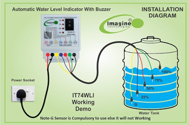
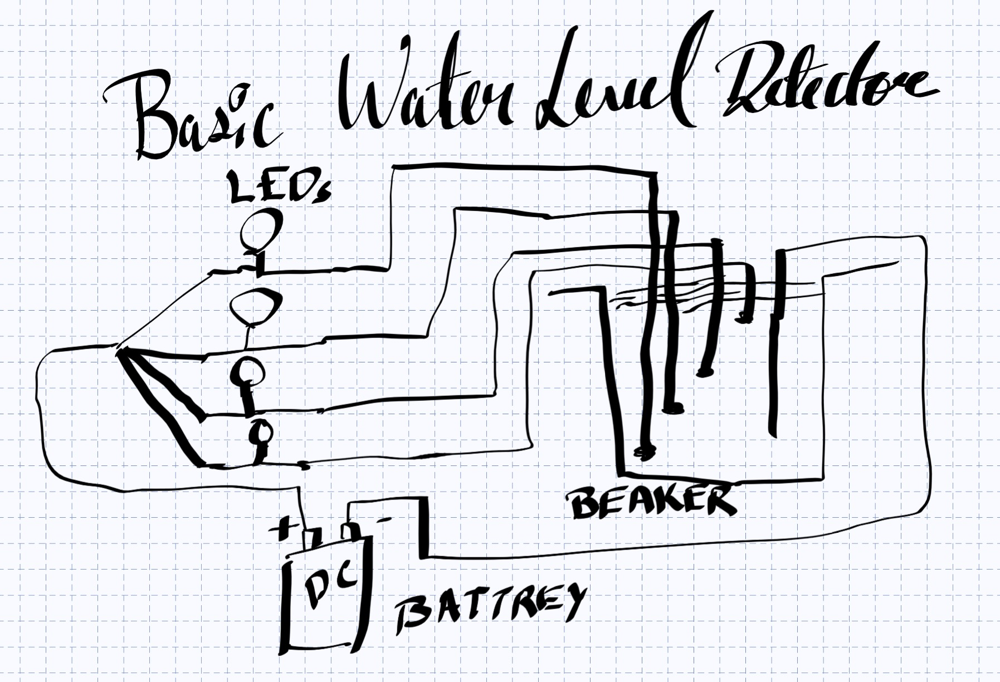
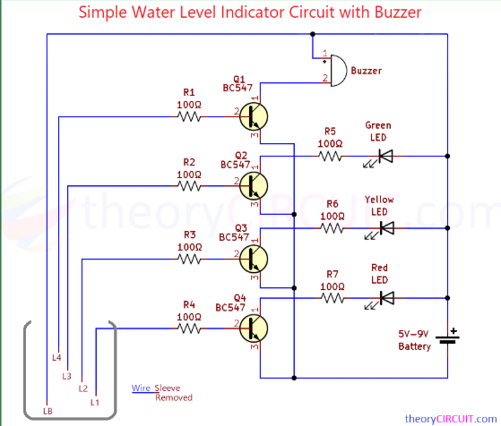
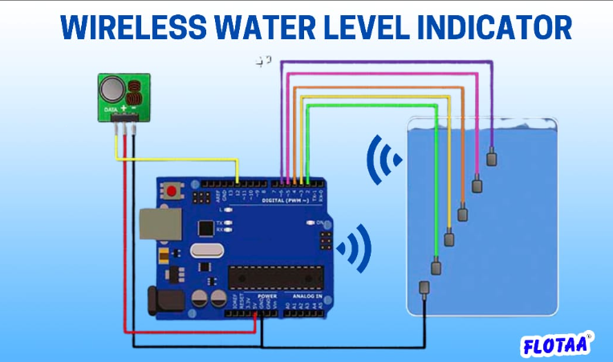

An IoT-based solution for efficient water monitoring and management. Designed to prevent overflow and improve water usage efficiency.
SRM Institute of Science and Technology
Group Members: R Rehan, Rishav Raj, S.L Ramkishore, Tamilselvan T, U Goutham, M. Kethana, Divya Daksh


The system works based on electrical conductivity of water. When water touches different probes placed at various heights, it completes the circuit and allows current to flow.
This triggers LEDs that indicate the level of water inside the tank, helping users monitor water levels easily without manual checking.

The circuit uses a microcontroller (ESP8266/Arduino) connected to probes. Each probe corresponds to a specific water level.
When water reaches a probe, the signal is sent to the controller, which activates LEDs indicating low, medium, or high levels.
Microcontroller: Processes signals and controls output
Water Probes: Detect water levels using conductivity
LED Indicators: Display level visually
Resistors: Regulate current flow
Power Supply: Provides required voltage
Wires: Connect all components

This system can be upgraded into a smart IoT system with:
• Digital water level display • Automatic motor ON/OFF • Buzzer alert for overflow • Mobile app monitoring • Cloud-based data tracking
Group Members:
RA2511003010536 - R Rehan
RA2511003010537 - Rishav Raj
RA2511003010538 - S.L Ramkishore
RA2511003010539 - Tamilselvan T
RA2511003010540 - U Goutham
RA2511003010541 - M. Kethana
RA2511003010542 - Divya Daksh
SRM Institute of Science and Technology